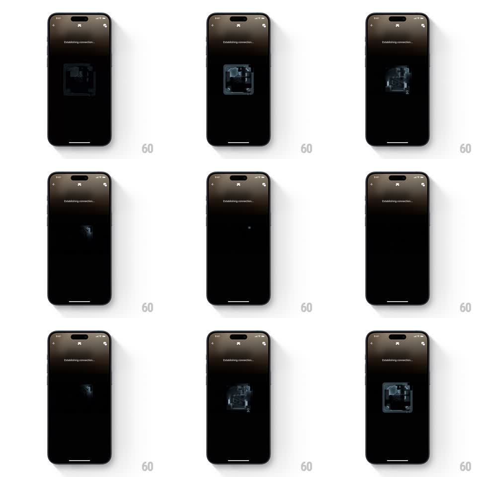

Media
Frame-by-frame

Rebuild this animation 1:1: Ultrahuman's device scan - a translucent 3D circuit board materializes, scales, and pulses on a black screen while "Establishing connection..." waits at the top.

Rebuild this animation 1:1: Ultrahuman's device scan - a translucent 3D circuit board materializes, scales, and pulses on a black screen while "Establishing connection..." waits at the top. ## Integration Integration: stack-agnostic spec - springs given as stiffness/damping, timed motions as duration + curve; map every value to your framework and animation library of choice. ## Scene Black screen: back/settings icons and "Establishing connection..." label at top. Center stage for the hardware render. ## Motion spec Pattern: looping scan pulse, ~2s. - The 3D circuit board fades in from nothing while scaling 0.7 -> 1 and rotating a few degrees to its resting angle (800ms, ease-out). - A scanning light passes over the board's surface (a brightness wave sweeping across, ~1s), then the board fades back down to a dim ghost (scale ~0.85) and the cycle repeats. - Each pass reveals slightly different board detail as the light sweeps - traces flare where the scan line crosses them. - The label holds a slow ellipsis pulse; nothing else moves. ## Calibration - The board never snaps in or out - every appearance and exit eases. - The scan sweep travels in one consistent direction; alternating directions reads as a broken loop. ## Reduced motion Static board at 60% opacity with a slow opacity breathe (2s cycle). ## Don't miss - The loop must be seamless - the dim ghost at the loop's end is the start state of the next pass. - Keep the board genuinely 3D (visible depth, layered traces); a flat image loses the hardware-scan feel.